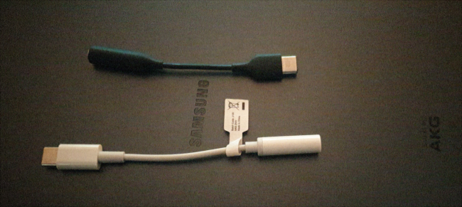

USB-C headphone dongles: still sucking after all these years

In an earlier article I lamented the loss of the standard 3.5mm headphone jack from mobile devices. Ironically, I’m shopping for a new cellphone because the 3.5mm jack on my Samsung Note 9 has failed. It hasn’t simply stopped working, however. No – that would be too manageable. Instead, it’s failed in such a way as to make the cellphone think there’s a headset permanently plugged in. This means that I get no audio in calls unless I’m using a wired headset. This isn’t very practical.
Now, I have to admit that one of the reasons manufacturers gave for dropping the 3.5mm jack is that these connectors are prone to failure because of damp or debris. The real reason, as we all know, is that cellphone suppliers have colossal investments in wireless headphone technology, investments of a scale that will have the entire board of directors brushing off their CVs if they don’t make a good return. Even knowing this, though, I can’t deny a grudging recognition that, in this one instance, they might have had a point.
Be that as it may, I’ve been considering whether I might begin to speculate on the possibility of buying a cellphone without a 3.5mm jack – something I long ago decided I would only consider when the Devil was driving to work on a snow-plough. Unfortunately, it’s getting more and more difficult to buy a modern, quality cellphone with a 3.5mm jack; difficult, at least, on my budget.
I’m going to be using wired headphones or, at least, keeping the capability to use them, for all the reasons I explained in my earlier article. So I obtained a few USB-C headphone dongles to try out with my headphones. I’ve always had problems with these in the past, but I hoped that maybe things had improved.
They hadn’t.
The problem…
I invite you to look at the two dongles in the photo below, and tell me whether either will work on my Samsung Note 9 or my Samsung S5E tablet.

Don’t know? Nor did I.
It turns out that the black one works with the tablet, but not the cellphone. The white one works with both. But the black one sounds better than the white one, with the device that supports them both, and it generates quite a bit more volume into the headphones.
WHY?
USB is supposed to be a standard, so why is compatibility between devices so unpredictable? The two dongles in the photo cost about the same (not much), and were advertised simply as a “USB-C headphone adapter”. Both claimed broad device compatibility. It’s nearly ten years since cellphone vendors started dropping the 3.5mm jack – why does this absurd situation continue?
The technical explanation is that, despite common belief, USB can actually carry analog signals, as well as digital data. That is, a cellphone or tablet can output ordinary analog audio through its USB port, if it wants. The commercial explanation, however, is something I’ll return to later.
The audio signal that reaches our ears is, of course, an analog one. To get this analog signal from the digital data manipulated by a mobile device, we need a digital-to-analog converter (DAC) somewhere. In the days when all cellphones had a 3.5mm jack, the DAC was part of its own hardware. The cellphone’s DAC was wired to the jack, probably through an audio amplifier, which was wired directly to the headphones.
Having dumped the 3.5mm jack, a question naturally arose: where should we put the DAC now? It would be perfectly feasible to put it in the headphones or in a USB adapter dongle. However, this adds cost to every such device. A good case can be made for keeping the DAC in the cellphone, even if it doesn’t have a 3.5mm jack, and routing the analog audio through the USB port. After all, the USB standards supported this mode of operation – it’s called “audio accessory mode”. USB isn’t purely a digital standard.
Cellphones are now divided into two groups: those that output analog audio through their USB ports, and those that do not. The latter require a headphone dongle which has its own DAC. A dongle designed for use with audio accessory mode won’t work if there is, in fact, no DAC in the device, or if it isn’t wired to the USB port. A USB headphone dongle that doesn’t contain a DAC is essentially just wires, and dirt cheap to make.
So you might be wondering whether there is any way to tell which mobile devices support audio accessory mode – and will work with a DAC-less (“passive”) dongle – and which don’t. So far as I know, there is not. My S5E tablet does and, presumably, has a built-in DAC to do it. My Note 9 does not, even though it has a built-in DAC, to drive the 3.5mm jack. Other than enduring a good deal of web searching, there’s still really no way to know which USB dongles work with which mobile devices.
Then there’s the question of sound quality. The black dongle in the photo above sounds better, with decent headphones, than the white one, when connected to the same tablet. Why?
The explanation is that the black dongle has no built-in DAC, which is why it doesn’t work with the Note 9. This dongle requires a device that supports audio accessory mode. In this mode, the analog audio is generated by the device, not the dongle. I presume that my Samsung tablet has a better DAC than my cheap dongle. My Samsung phone also has a better DAC, but it isn’t wired to the USB port, so it can’t be used with a dongle.
Is there any way to tell in advance whether you’ll get better sound quality from a dongle that contains a DAC, rather than a device’s built-in DAC? Probably not for certain; but I would guess that any mobile device that has a built-in DAC at all, is going to have a better DAC than a cheap USB dongle. That’s certainly been my experience, at least.
Is there any way to tell in advance whether a particular headphone dongle even has a built-in DAC? And, if it does, whether there’s any way for it to fall back on the analog signal provided by the mobile device, if it provides one? Again, I think the answer is probably ‘no’. It’s perhaps safe to assume that if the advertising refers to a DAC, the dongle probably has one; but I’ve never seen this kind of advertising with any technical detail about the DAC.
As for the mobile device itself: I happen to know – thanks to a bit of web searching – that my Note 9 has a built-in DAC made by Wolfson: a reputable manufacturer of such parts. It certainly produces great-sounding audio into wired headphones through its 3.5mm jack. I also know that the Note 10, and probably most newer Samsung cellphones, does not have a DAC. So if I want to get decent audio quality into wired headphones from such a device, what must I do?
What I can’t do, sadly, is simply use one of those cheap USB-C headphone dongles. It might be convenient to use one – if it works – but, if your dongle costs only a few pounds, it doesn’t contain a hi-fi quality DAC. My Note 9 does contain a hi-fi quality DAC, and it galls me that more modern cellphones increasingly do not.
How did we get here?
It’s worth speculating about how this absurd situation came about, and why it’s still a problem ten years after manufacturers started to drop the 3.5mm jack. I suspect that, when this benighted development began, cellphone vendors still provided wired earphones in the box. Even if they didn’t, there were large numbers of analog earphones and headphones in use. It was probably cheaper for vendors to provide cheap analog earphones, and a completely passive USB dongle that relied on a DAC in the cellphone, than to design and supply a DAC-equipped dongle. After all, USB audio accessory mode allowed analog audio to be routed to the USB port.
This meant, of course, that the manufacturer would have to provide a DAC in the handset; but cellphone manufacturers had already been doing that for decades. They already had the designs and the tooling for it. In short, it was cheaper for vendors to continue to put DACs in their cellphones, than in their dongles.
I speculate further that the market soon became flooded with dirt-cheap, passive headphone dongles, that would have worked with most handsets at the time. As time passed, however, and DAC-equipped dongles started to be cost-effective to manufacture, cellphone vendors had less motivation to continue to provide a DAC, and they quietly stopped doing so. This didn’t remove all the incompatible dongles from the market, though, and they’re still widely sold.
There is a more cynical explanation, however.
Cellphone manufacturers don’t just want to get rid of the 3.5mm jack: they want to get rid of wired audio support completely. They’ve bet the farm on wireless audio gadgets, so they have to sell cart-loads of them to cover their investments. One way to do that is to ensure that consumers have no practical alternative. It’s in the manufacturers’ interest to allow the UBS-C audio confusion to continue, especially when they can blame somebody else when things don’t work.
So what do we do?
If you don’t care about sound quality, the situation is simple enough: buy a cheap headphone dongle that you can be reasonably sure includes a built-in DAC. This will work with cellphones with and without audio accessory support in their USB ports. You’ll need to make some inferences from the dongle’s advertising, because it won’t usually be particularly clear. You might need to buy more than one, as I did; but, happily, they’re not expensive.
If you do care about sound quality, then you’ll need to obtain a cellphone with a good-quality built-in DAC, and then shop around for a headphone dongle that doesn’t contain its own DAC. Again, you’ll need to make inferences from the advertising.
My DAC-equipped dongle shows up as a USB DAC when I plug it into my Linux laptop; I presume the same would be true for other operating systems. The non-DAC dongle doesn’t register at all, since it has no electronics of its own. These facts don’t help me to choose which dongle to buy, but at least they help me to understand why things don’t behave as I expect.
Of course, if you really care about sound quality, you’ll probably want to use a hi-fi USB DAC, not a dongle. There are many of these on the market, and some are reasonable portable. None is cheap, however.
Closing remarks
My foray into the murky world of USB-C headphone dongles hasn’t encouraged me to adopt this technology. Most likely I will continue to use handsets that still have headphone jacks.